more sophisticated methods · return types · parameters · Strings · String methods · JOptionPane
In this step, you will draw many eyes (the examples 3.7 - 3.9 from your lectures).
Create a new Processing sketch in your workspace and call it Example_3_7.
Your display window should be 100x100. Write the line of code that will ensure all subsequent shapes are drawn with no outline.
Include the following code in your sketch:
void draw()
{
background(204);
fill(255);
ellipse(50,50,60,60); //outer white circle
fill(0);
ellipse(50+10, 50, 30, 30); //black circle
fill(255);
ellipse(50+16, 46, 6, 6); //small, white circle
}Run your code; a single eye should be drawn.
Save your work.
With your Example_3_7 sketch open, perform a Save as... and enter the name Example_3_8.
Now refactor the code above so that you have a method called eye. This method should:
Call the eye method twice from the draw method so that your display window is rendered like so:
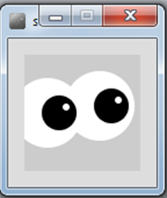
Save your work.
With your Example_3_8 sketch open, perform a Save as... and enter the name Example_3_9.
Now refactor the code to call the eye method six times from the draw method so that your display window is rendered like so:
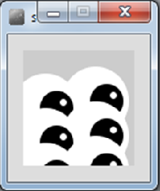
Save your work.
In this step, you will draw many X's (the processing examples 3.10 - 3.15 from your lectures).
Create a new Processing sketch in your workspace and call it Example_3_10.
Your display window should be 100x100 and have a light grey background.
Write a method called drawX that:
Call this method from the setup() method.
When you run your code, it should look like this:
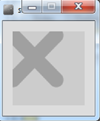
Save your work.
With your Example_3_10 sketch open, perform a Save as... and enter the name Example_3_11.
To the existing code, write another method called drawX that:
In the setup() method, comment out the call to the previous draw method. Now call this method instead, passing the value of 0 as a parameter.
When you run your code, it should look like this:
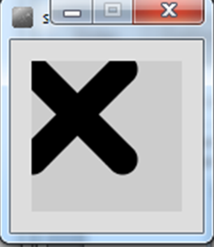
Save your work.
With your Example_3_11 sketch open, perform a Save as... and enter the name Example_3_12.
To the existing code, write another method called drawX that:
In the setup() method, comment out the call to the previous draw method. Now call this method instead, passing the value of 0, 30 as parameters.
When you run your code, it should look like this:
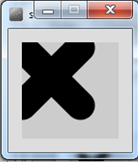
Save your work.
With your Example_3_12 sketch open, perform a Save as... and enter the name Example_3_13.
Write another method called drawX that:
In the setup() method, comment out the call to the previous draw method. Now call this method instead, passing the values: 0, 30, 40, 30, 35) as parameters.
When you run your code, it should look like this:
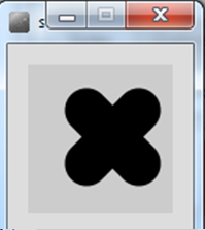
Save your work.
With your Example_3_13 sketch open, perform a Save as... and enter the name Example_3_14.
Using the most appropriate drawX method, reproduce the following output (you will have three individual method calls):
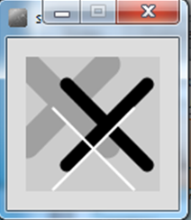
Save your work.
With your Example_3_14 sketch open, perform a Save as... and enter the name Example_3_15.
Using the most appropriate drawX method and a for or while loop, reproduce the following output:
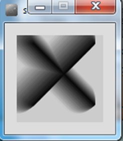
Save your work.
For our drawX project, you will notice that we now have 5 sketches, Example_3_10 to Example_3_15. This means that we have 5 different versions of the drawX project. As we incrementally worked on our drawX project and got a new method working, we saved off that work and starting working in a new file. This is a standard approach in programming and we will focus more on this approach throughout the course.
In this step, you will work on reproducing the code example 3.16 from your lectures.
Create a new Processing sketch in your workspace and call it Example_3_16.
Write a method called farenheitToCelsius that takes one float parameter.
The return type for this method is float.
The method returns the result of the conversion: (farenheit - 32.0) * (5.0/9.0)
The farenheitToCelsius method should be called from the draw() method.
The value retuned from the calculation should be printed to the console.
Test your code by passing the farenheit value of 451. The celsius value printed should be: 232.77779
In this step, you will work on reproducing the code example 3.17 from your lectures.
Create a new Processing sketch in your workspace and call it Example_3_17.
Include the following code in it:
void setup()
{
size(100,100);
drawLines(10,4);
}
void drawLines(int x, int num)
{
for (int i = 0; i < num; num--)
{
line (x, 20, x, 80);
x += 5;
}
}Run the code so you can see the output.
A method can contain a line of code that calls itself.
This is called recursion.
To stop the infinite calling of the method, it is necessary to have some way for the method to exit. This is called the base case. You continually work towards the base case.
Rewrite the drawLines method so that it uses recursion to produce the same output as above.
Save your work.
Create a new sketch called lab03b_exercise01.
In this exercise, you will call many different methods over a given String.
Declare a String to hold the text This is my String exercise.
Produce the following console output over the String:
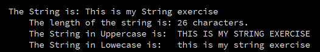
Save your work.
For each challenge listed below, open a new sketch.
In these challenges, we are going to use something you haven't seen before..Message Dialogs.
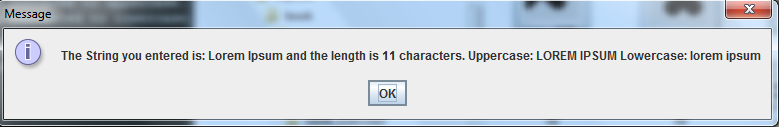
We will these Dialog boxes to ask the user to type in information. We will also use them to display information.
As we will cover the theory on them later in the course, we will give you the starting code here. Don't worry if you don't understand all of the code relating to these dialogs, or if you can't do these exercises...we will cover it later!
Cut and paste the following code into a new sketchbook.
import javax.swing.*;
void setup()
{
String str = JOptionPane.showInputDialog("Enter a String of your choice:");
JOptionPane.showMessageDialog(null, "The String you entered is: " + str);
exit(); //supresses the display window.
}Run the code. When the Dialog appears, enter any String of your choice. Is it re-displayed back to you?
Save your work.
Taking the code from the above challenge as starter code, make the necessary changes to display the length of the entered string as well as the entered string.
Run the code. When the Dialog appears, enter any String of your choice. Is it re-displayed back to you, along with the length of the String?
Save your work.
Using the code from the above challenge, make the necessary changes to display:
Run the code. When the Dialog appears, enter any String of your choice. Is the right information displayed in the JOption pane? However, does it look very cluttered like this? We will fix the layout in our next challenge.
Save your work.
Escape sequences are used to format Strings in Java:
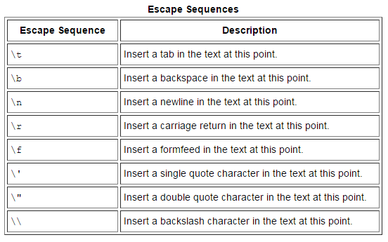
Research the use of escape characters in Java.
Using the newline escape sequence, format the code from the above challenge so that your Message Dialog looks like this:
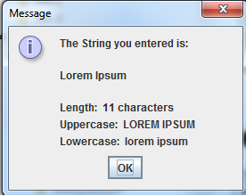
Save your work.
The solutions for this lab can be found here.
If you require unzipping software, 7zip is a good choice: http://www.7-zip.org/ (or Keka for Mac http://www.kekaosx.com/en/)
After unzipping the solutions, it might be a good idea to copy the folders to your sketchbook folder. From Processing, you could then use File, followed by Sketchbook to easily open them.